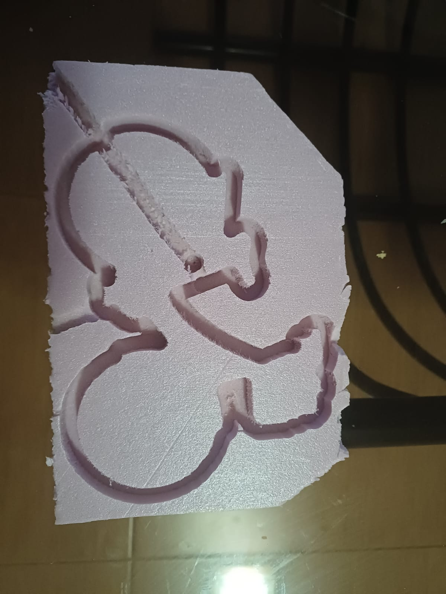
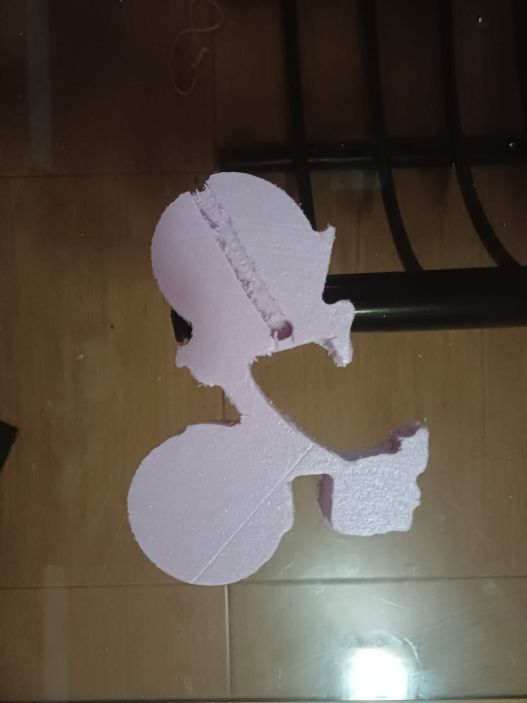

Clase 8 — Máquina CNC: bicicleta en espuma
En esta práctica aprendimos el proceso completo para maquinar una pieza en CNC: del diseño al Código G y luego a la máquina. Mi pieza fue una bicicleta cortada en espuma rosa.
1. Del diseño al Código G con VCarve Pro
VCarve Pro es un software CAM. Recibe un dibujo vectorial (DXF o SVG) y lo convierte en las trayectorias que va a seguir la herramienta.
- Importar el dibujo de la bicicleta.
- Definir el material (stock): medidas de la placa y grosor.
- Elegir la estrategia de corte:
- Perfilado (Profile): corta siguiendo el contorno para sacar la pieza.
- Cajeado (Pocket): vacía el material dentro de un área.
- Guardar las trayectorias como Código G, que es un archivo de texto con las instrucciones para la máquina.
2. Revisión en NC Viewer
Antes de mandar el archivo a la máquina, lo revisamos en NC Viewer, una página web que dibuja en 3D el recorrido del Código G.
- Con el botón PLOT se dibuja la trayectoria.
- Con los controles de reproducción se ve la simulación paso a paso.
- En el eje Z, los valores negativos indican que la herramienta está entrando al material.
Esto sirve para detectar errores antes de gastar material o arriesgar la herramienta.
3. Operación de la máquina
Sujeción del material
| Material | Cómo se fija |
|---|---|
| Unicel o espuma | Cinta de doble cara |
| Madera o MDF | Clavado o atornillado |
Procedimiento
- Montar la herramienta en la boquilla (collet).
- Fijar el material en la mesa.
- Encender la máquina y desbloquear el paro de emergencia.
- Cargar el archivo de Código G.
- Poner en cero los ejes X, Y y Z en la esquina del material.
- Ejecutar el corte y vigilarlo con los controles Correr, Pausar y Parar a la mano.
4. Resultado

Placa de espuma después del maquinado, con el contorno de la bicicleta.

Bicicleta ya separada de la placa.
Observaciones
- Algunas orillas quedaron con rebaba. La espuma se desgarra un poco en lugar de cortarse limpio, sobre todo en las curvas cerradas.
- Se ve una línea recta marcada a lo largo de la pieza. Es la marca de la herramienta al moverse sin levantarse lo suficiente en Z. Para evitarla, conviene subir la altura segura de desplazamiento.
Aprendizajes
Aprendí que la CNC necesita que todo esté bien desde la computadora: un error en el Código G o en el cero de los ejes arruina la pieza. Simular antes en NC Viewer y revisar la altura de los movimientos rápidos ahorra material y tiempo.